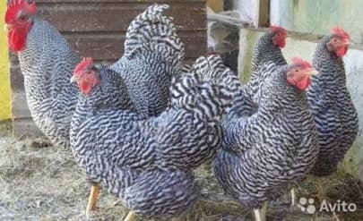
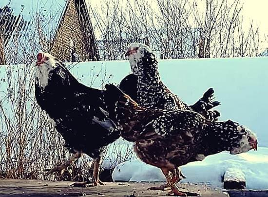

Среди одомашненных птиц наибольшее распространение получили курицы. Благодаря легкости в уходе и содержании, а также полезному мясу и возможности получать от них яйца, сложно найти аналог среди других видов птиц. Куриное мясо и яйца обладают большим количеством питательных и полезных веществ. Они включаются в меню с низкокалорийной пищей. Эти птицы могут содержаться не только в целях получения продуктов питания, но и как бойцовые или декоративные (эти виды мы здесь не рассматриваем). Декоративных птиц содержит ограниченное количество любителей, а куриные бои – нехарактерное увлечение для наших широт! Да и не гуманно, по большому счету!
Большинство людей разводит кур ради низкокалорийного и полезного мяса, которое лидирует в мировой гастрономии наравне с говядиной, свининой, и бараниной. Учитывая разнообразие целей разведения куриц, существует множество пород этих птиц.
В рамках данного раздела, нами предпринята попытка провести обзор пород кур и дать начинающим птицеводам общие советы, на каких конкретно породах стоит остановить свое внимание, базируясь на ваших пожеланиях и возможностях. После принятия решения, вы можете обратиться к специальной литературе или сайтам, которые подготовлены специалистами в области генетики, селекции, содержания и разведения птиц, учеными-орнитологами.
Наша задача, дать в этой статье общий обзор по породам кур и условиям их содержания. Данные предварительные познания позволят вам наиболее точно определиться с видом и типом курятника, которые мы изготавливаем, в зависимости от своих потребностей и бюджета.
Сразу оговоримся, что при выполнении данного обзора, мы делали больший упор на описание кур яичных пород, принимая во внимание тематику нашего сайта.
КЛАССИФИКАЦИЯ
Основной признак классификации пород кур базируется от назначения. Каждая группа обладает своими преимуществами и недостатками. Сегодня в мире официально зарегистрировано более 200 пород домашних кур, однако на самом деле их значительно больше. В этой статье мы остановимся на трех группах кур, в зависимости от их потребительских свойств, поскольку это в наибольшей степени интересует производителей-любителей на своих приусадебных участках: яичные, мясные и мясо-яичные породы . Прежде всего, при выборе породы кур для своего курятника, нужно помнить, что среди продуктивных видов меньше всего весят яичные породы (куры — 1,8 кг, петухи — 2,7 кг), а больше всего — мясные (куры 3 — кг, петухи — 3,5 кг).
ЯИЧНЫЕ
Кур яичных пород (отличаются высокой яйценоскостью). Проще всего их можно определить по листовидному гребню, расположенному за 23-м зубцом и спадающему на бок. Птицы данной направленности более скороспелые, чем мясо-яичных пород. Средняя яйценоскость кур в год составляет 200-220 яиц. Для получения большого количества яиц чаще всего разводят Адлерскую серебристую, Леггорн, Доминант, Ломан Браун, Маран, Хай Лайн , а также других.
Адлерская серебристая курица является смешанным видом, выведенным путем скрещивания 5 разновидностей птицы. Куры отличаются дружелюбием, отзывчивостью, быстрой адаптацией к новым условиям. Продуктивность и качество яиц с годами не утрачивается. У серебристых кур отсутствует инстинкт насиживания, поэтому для разведения они не подходят. Нестись начинают в 6 месяцев, но птицы, рожденные ранней весной, могут начать приносить яйца раньше.
В среднем Адлерская кура сносит 170-190 яиц за год, иногда показатель может вырастать до 200 яиц. Их средний вес 58-59 грамм, а скорлупа кремового цвета. Главной особенностью вида считается то, что ее можно разводить более трёх лет, в отличие от других птиц, которых обычно разводят не более года. Средние цены на кур Адлерской породы в Центральной части России варьируются от 600 до 1000 рублей, в зависимости от возраста молоди, что говорит о ее серьезной бюджетной доступности.
Леггорн . В 1859 году белые итальянские куры были завезены в США и там значительно улучшены скрещиванием с белыми минорками и испанками. Получились Леггорны (искаженное американскими куроводами название итальянского города Ливорно). В 70-е годы XIX века были завезены в Европу, а вскоре стали разводиться и в России. Сейчас это наиболее распространенная порода кур-несушек в мире.
Особенности породы — подверженность шумовой истерии. Из-за этого птица должна содержаться в спокойных условиях. Курам-несушкам характерно раннее начало яйцекладки (4,5-5 мес.), максимальная яйцекладка в 1 год, крупные яйца и высокая яйценоскость на протяжении всего продуктивного периода. В среднем за год Леггорн приносит 160-230 яиц, но может быть 300 и более. Яйца имеют крепкую скорлупу белого цвета, а их средний вес — 60 г. Куры легко переносят отрицательные температуры и их с большим успехом можно содержать в зимних курятниках. Средние цены на кур этой породы в Москве и области варьируют от 400 до 600 рублей, в зависимости от возраста птицы. Также очень привлекательны в ценовом плане.
 Доминант . Данная порода является улучшенным вариантом стандартной несушки. Селекционеры позаботились о том, чтобы совместить в одном виде привлекательный внешний вид и высокие продуктивные качества.
Главной особенностью такой птицы является её продуктивность, они могут нести до 300 яиц в год со средним весом 70 г. в течение трех-четырех лет ! Они начинают нестись уже с пятого месяца от вылупления из яйца. Очень большой выбор расцветок!
Кроме того, она отличается устойчивостью к вредным факторам и заболеваниям различного вида. Куры очень выносливы, могут жить в любых условиях и не требуют особого ухода. Птицы отличаются очень сильным иммунитетом, из-за чего практически не подвержены болезням. Средние цены на кур этой породы в Москве и Московской области колеблются от 400 до 800 рублей, в зависимости от возраста подростков и окраса.
Ломан Браун . Данный вид выведен немецкими селекционерами. Куры-несушки породы Ломан Браун имеют коричневую окраску и спокойный, удобный для содержания на собственном участке нрав. Эти птицы не пугливы, выносливы и высокопродуктивны. Легко переносят холода в специальных зимних курятниках. Кроме этих достоинств, нельзя не назвать экономичность содержания кур этой породы. Они достаточно мало потребляют корма, зато уже с 5,5 месяцев готовы нестись. В среднем яйцо весит 62–64 грамма, имеет крепкую светло-коричневую скорлупу, характерную для этих коричневых кур-несушек. За год от самки можно получить до 320 яиц, что также положительным образом влияет на выбор этой породы. Средние цены на кур этой породы в Москве и Московской области колеблются от 400 до 600 рублей, в зависимости от возраста молоди.
 Орловские куры . Данная порода кур является одной из старейших в России – они появилась более двухсот лет назад. Орловские куры были широко распространены в XIX веке, но к середине ХХ века почти исчезли. В 70-х годах прошлого века породу начали восстанавливать. Сейчас распространены русские орловские куры ситцевой окраски, белой и алой. Стандартный вес петухов – 3.1 кг, несушки весят меньше: от 2.0 до 3.0 кг.
Начинают нестись с 250 дней, яйценоскость доходит до 160 яиц, и с возрастом кур снижается. Вес яиц составляет 60 г. Скорлупа может быть белой или светло-бежевой. Мясо мелковолокнистое приятное на вкус. Характеризуются выносливостью и неприхотливостью к корму и условиям содержания. Но молодняк из-за медленного оперения, нуждается в повышенном внимании и уходе и его желательно содержать в специально оборудованных зимних курятниках со строгим контролем температуры. У несушек слабый инстинкт насиживания. Цены в Центральной части России варьируются от 1000 до 2000 руб.
Хай Лайн – курица, выведенная учеными-селекционерами из Америки. Данную породу отличает экономичность в содержании, малая требовательность к объему и разновидностям кормов и относительно высокая яйценоскость. Птицы относится к скороспелым, поскольку к 5-и месяцам начинаются первые яйцекладки, но ее рост продолжается практически в течение года. Однако у кур породы Хай Лайн есть существенный недостаток, который заставляет задуматься о ее приобретении - она может быть полезной всего 1,5-2 года, а затем резко сокращается производство яиц и дальнейшее ее содержание становится нерентабельным. Средние цены - в Москве и области варьируют от 600 до 1000 рублей, в зависимости от возраста птицы.
 Маран
. Мараны —Один из главных признаков породы — очень крупные яйца красивой красно-коричневой расцветки. Помните сказку про курочку Рябу и золотое яичко? Так вот это про нее сказка!
Маран
. Мараны —Один из главных признаков породы — очень крупные яйца красивой красно-коричневой расцветки. Помните сказку про курочку Рябу и золотое яичко? Так вот это про нее сказка!
Выведены мараны были во Франции, в городе Маранс, в последние годы стали популярны России благодаря выдающимся характеристикам. Вес петухов достигает 3,5-4 кг, кур — 2,6-3,2 кг. Годовалые птицы уже имеют вес 3-3,5 кг у петушков и 2,2-2,6 кг у курочек. Отзывы о породе утверждают, что их яйца могут достигать массы до 85 г., при том, что у яичных пород крупными считаются яйца массой 60-65 г. Мараны начинают нестись в 5-6 месяцев. Яйценоскость колеблется в пределах 130-150 в год. Но все зависит от условий содержания и кормления. Цены на птенцов-подростков этой породы варьируются в пределах 2000 – 3000 руб. за птицу.
Легбар . Куры Легбар начинают откладывать яйца с 6-7 месячного возраста. Яйценоскость составляет 200-210 яиц. Цвет скорлупы голубой или светло-зеленый. Вес яиц 55-60 г. Петухи имеют массу 2,7 - 3,4 кг, курицы — 2,0 - 2,7 кг. К достоинствам породы относится тихий нрав, необычный цвет скорлупы; куры обладают крепким здоровьем и их с успехом можно содержать в зимних курятниках, однако отмечается сильное понижение яйценоскости при сильных отрицательных температурах. Средние цены на кур этой породы в Москве и Московской области колеблются от 2000 до 3000 до, в зависимости от возраста молоди.
Араукан . Это одна из наиболее древних кур. Эти куры были выведены в Чили. Уникальная особенность этих птиц – зеленовато-голубая скорлупа яиц. К достоинствам относится неприхотливость, быстрая приспособляемость к окружению, легкая адаптация к различной температуре. Молодые птенцы обладают хорошей жизнестойкостью, рано созревают и начинают яйцекладку. К недостаткам – петухи-забияки, а куры потеряли инстинкт насиживания.
И самое важное, пожалуй, это уникальность и редкость породы, что делает ее весьма дорогой для приобретения . Курица Араукана может достичь 1,5-1,7 кг живого веса, а петух – 1,8-2 кг. Данные куры рано достигают половой зрелости. За год яйцекладка одной курочки может составить 160 достаточно крупных (57-58 г) яиц. В разведении – проблематичны. Поскольку утерян эффект насиживания. Средние цены в Центральной части России колеблются от 2000 до 3000 рублей за особь.
Русская белая . Эту породу выводят с 30-х годов XX века. В основе – Леггорны, знаменитые куры-несушки. Высокая яйценоскость сочетается в них с отличным иммунитетом. Несушки Русской белой отличаются устойчивостью ко многим заболеваниям и рекомендуется к содержанию в теплых зимних курятниках.
Русская белая порода кур имеет высшие показатели продуктивности. Взрослая курица в среднем весит 2,100 кг. Петухи Русской белой вырастают не больше 3,0 кг. Яичная продуктивность несушек находится на уровне Леггорнов. Несушка за год откладывает 200–240 исключительно белых яиц. Птенцы очень рано созревают, примерно в 5-5,5 месяцев. Средняя я масса яиц – 56–60 г., но бывают и до 65 гр. Русские белые пугливы и хорошо летают. Крылья лучше сразу обрезать или купить курятник с выгулом. Средние цены составят 400-800 рублей за курицу-несушку.
МЯСНЫЕ
Мясные породы кур . Постоянно возрастающая численность населения Земли требует интенсивного развития мясного производства. Поэтому выведение все более продуктивных мясных пород кур – постоянная задача, которая стоит перед селекционерами и генетиками птицы. Крупные породы мясного направления, разводятся для получения мяса, однако многие из них не утрачивают способность и к несению яиц. Птицы отличаются большим весом. Чаще всего для получения мяса разводят такие породы, как Брама, Фавероль, Малин, Корниш, Доркинг, Кохинхин, Юрловская .
 Изначально Брама
выводили как тяжеловесов и их часто содержали ради декоративной функции. Мясо данной породы считается самым нежным, качественным и диетическим среди всех мясных пород кур. Однако неправильно подобранные корма и добавки приводят к огрубению мяса и ухудшают его вкусовые и питательные качества. Живой вес кур — 3,5-4 кг, петухов — 4,5-5 кг. Средние цены на кур этой породы колеблются от 2000 до 5000 рублей.
Изначально Брама
выводили как тяжеловесов и их часто содержали ради декоративной функции. Мясо данной породы считается самым нежным, качественным и диетическим среди всех мясных пород кур. Однако неправильно подобранные корма и добавки приводят к огрубению мяса и ухудшают его вкусовые и питательные качества. Живой вес кур — 3,5-4 кг, петухов — 4,5-5 кг. Средние цены на кур этой породы колеблются от 2000 до 5000 рублей.
 Куры породы Фавероль
обладают крупным сильным телосложением. Птица отлично приспособлена к холодам и отличается высокой продуктивностью. Недостатком породы является склонность кур к ожирению и потеря продуктивности при скрещивании с другими породами. Средний вес кур – 2,6-3,2 кг,, а петухов — 3,1–4,0 кг. В первый год яйцекладки приносят около 160 яиц, во второй и последующие года — около 130. Яйцам характерна плотная желто-коричневая или розовато-коричневая скорлупа, а их масса достигает 55-58 г. Средние цены на кур этой породы в Москве и Московской области колеблются на уровне 1500 - 3000 рублей, в зависимости от возраста птицы.
Куры породы Фавероль
обладают крупным сильным телосложением. Птица отлично приспособлена к холодам и отличается высокой продуктивностью. Недостатком породы является склонность кур к ожирению и потеря продуктивности при скрещивании с другими породами. Средний вес кур – 2,6-3,2 кг,, а петухов — 3,1–4,0 кг. В первый год яйцекладки приносят около 160 яиц, во второй и последующие года — около 130. Яйцам характерна плотная желто-коричневая или розовато-коричневая скорлупа, а их масса достигает 55-58 г. Средние цены на кур этой породы в Москве и Московской области колеблются на уровне 1500 - 3000 рублей, в зависимости от возраста птицы.
Мехеленская кукушка или Малин пестрые, серо-белые с кукушечным окрасом пернатые несушки славятся прекрасным аппетитом, но в качестве бонуса дают около 120-130 яиц в год и массу тела до 5 кг. Были выведены в результате селекции ученых из Бельгии.
Эти птицы имеют забавный вид, этакие упитанные тетерева на току, бывалым охотникам знакома это боровая дичь. Данная порода также отличается выносливостью и неприхотливостью в содержании и кормах, и несушки прекрасно переносят зиму в теплых курятниках. За такую птичку придется выложить от 1500 до 4000 своих кровных, в зависимости от возраста молоди.
Корниш – предок множества современных быстрорастущих кур. Его прапращурами были бойцовские петушки, которых скрещивали с представителями местных пород в Великобритании. В результате селекции у кур практически ничего не осталось от бойцовских дедов, кроме хорошо сложенного мускулистого туловища и неплохого веса. Средние показатели веса - от 3,5 до 4,5 кг., они обладают мягким и покладистым характером, хотя петухи временами и могут выступать на защиту своего гарема, но это скорее исключение, чем правило.
Птицы также не прихотливы и требуют особых забот в содержании. Курятник должен быть правильно устроен, ухожен и освещен, а в зимний период поддерживаться необходимая температура. Средние цены на кур этой породы в Москве и Московской области колеблются от 2000 до 5000 рублей, в зависимости от возраста несушек-подростков.
 Доркинг
– разновидность домашних кур, прошедшая длинный тернистый путь изменений, пока не получила всемирное признание в середине XIX века. Сначала птицеводы отнеслись к появлению этой породы с большим скепсисом, несмотря на с привлекательную внешностью и хорошие показатели. Позже ею заинтересовались, и она получила признание во многих странах.
Доркинг
– разновидность домашних кур, прошедшая длинный тернистый путь изменений, пока не получила всемирное признание в середине XIX века. Сначала птицеводы отнеслись к появлению этой породы с большим скепсисом, несмотря на с привлекательную внешностью и хорошие показатели. Позже ею заинтересовались, и она получила признание во многих странах.
Среднестатистические показатели веса доркингов– от 3,5 до 5 кг., сочетаются с привлекательной внешностью и крепким здоровьем. Холода переносят хорошо, но в слишком морозные зимы процесс кладки может приостанавливаться. Средние цены в Центральной части РФ колеблются от 2000 до 4000 руб. в зависимости от возраста молоди.
Кохинхин . Название породы созвучно с местностью в юго-восточном Индокитае, откуда произошли далекие предки этих кур.
К достоинствам следует отнеси высокую продуктивность по мясу, выносливость и неприхотливость в содержании. Для них не требуется больших выгулов, поэтому можно купить курятник средних размеров с открытым выгулом. Однако, птицы склонны к ожирению, цыплята Кохинхин плохо оперяются и поздно созревают. Дороги для приобретения. Продуктивность курочек и петушков этой породы не слишком высока. Яйценоскость не превышает 100-120 яиц в год, масса которых составляет 50-60 г. Цвет скорлупы – темно-коричневый. Петух Кохинхин достигает 4,3 кг живого веса, а курица – 4 кг. За молодь этой породы придется выложить от 2000- 4000 рублей. Да, не мало, но того стоит.
Юрловская . Название получили от с. Юрлово. Голосистыми назвали по способности петухов к продолжительному звучному пению.
Продуктивность Юрловских кур: живая масса кур 2,5, петухов 3,3 кг. Яйценоскость за первый год продуктивности 150 - 160 яиц. Масса яйца 58 г, окраска скорлупы кремовая. Куры имеют позднюю половую зрелость и начинают нестись в шестимесячном возрасте. Птица этой породы неприхотлива к условиям кормления и содержания. Для этой породы характерна средняя по интенсивности яйценоскость. Крупные, до 90 г, светло-коричневые яйца, курица способна нести до 160 дней в году.
Кроме того, куры представляют интерес в плане набора массы тела. Взрослый Юрловский голосистый петух достигает 5,5 кг. Курицы поменьше, но тоже интересны для забоя. Живой вес находится в пределах 3,5–4,5 кг.
К достоинствам Юрловских голосистых относят большую массу тела, вкусное мясо, крупные яйца (их величина компенсирует среднюю яйценоскость). Среди недостатков отмечаются высокая агрессивность, особенно у петухов. Поскольку птица данной породы остро реагируют на замкнутое пространство, необходимо купить курятник с выгулом, желательно больших размеров. Средняя цена – 1500 – 3000 рублей за несушку-подростка.
МЯСО-ЯИЧНЫЕ
Куры мясо-яичного направления . Эти птицы в равной степени обладают хорошей яйценоскостью и вкусным мясом. Для данного разведения используют виды Русская хохлатая, Орпингтон и Фокси Чик, Амрок, Плимутрок .
Русская хохлатая — весьма популярная порода благодаря своему крепкому иммунитету и выносливости. Живая масса кур достигает 2,2 кг, а петухов — 3,5 кг. Средняя продуктивность за год — свыше 160 яиц. Яйцо белого или кремового оттенка со средней массой 56 г. Недостатком породы является излишняя агрессивность петухов друг к другу.
Традиционная русская хохлатая порода кур представляет собой весьма неприхотливую разновидность домашних птиц. У породы высокий уровень оплодотворяемости и хорошо развитый инстинкт насиживания, что положительно сказывается на выживаемости потомства. Стоимость этих кур относительна не высока и колеблется на уровне 600-1000 рублей за птицу.
Орпингтон является британским универсальным видом. Птицам характерно массивное телосложение. Петухи данной породы могут вырастать до 4,5-5 кг, а куры на килограмм меньше. Яичная продуктивность составляет 160-180 штук в год. Яйца имеют прочную скорлупу желто-коричневого оттенка и в среднем весят 60-62 г. Цыплята растут очень медленно и требуют больших вложений в корма для достижения необходимого веса. За курочку-подростка придется заплатить от 2000 до 4000 рублей.
 Амрокс
. Современные птицеводы при разведении на личном подворье кур все чаще отдают предпочтение мясо-яичному направлению
. Ведь эти птицы наряду с хорошей яйценоской производительностью позволяют хозяину получать от них и достаточное количество мяса. Представители этой породы отличаются быстрым ростом и хорошей выживаемостью как молодняка, так и взрослых особей.
Амрокс
. Современные птицеводы при разведении на личном подворье кур все чаще отдают предпочтение мясо-яичному направлению
. Ведь эти птицы наряду с хорошей яйценоской производительностью позволяют хозяину получать от них и достаточное количество мяса. Представители этой породы отличаются быстрым ростом и хорошей выживаемостью как молодняка, так и взрослых особей.
Молодые петушки вырастают до 4 кг живого веса, а курочки-молодки – до 2,5-3,0 кг. Рост не останавливается до 1,5-летнего возраста, в котором петухи могут весить 4,5 кг, а куры – до 3,5 кг. К достоинствам следует отнести высокую выживаемость. высокие показатели продуктивности, добродушный и спокойный нрав. Средние цены на кур этой породы в Москве и Московской области колеблются от 1000 до 1500 рублей, в зависимости от возраста молоди.
Плимутрок . Куры Плимутрок имеют хорошие показатели продуктивности и не нуждаются в специальных условиях содержания. Свое название куры получили благодаря американскому городу Плимут и добавленному к нему слову rock – «скала», что характеризовало плотное и крепкое сложение птицы. В России Плимутроки появились с 1911 года. В настоящее время порода пользуется большим спросом во всех странах. Характер у Плимутроков мирный, они непугливые и любопытные. Характеристики продуктивности. Порода Плимутрок относится к мясо-яичному направлению. Яйценоскость составляет от 160 до 190 яиц. Вес яйца 55-60 г, в среднем – 58 г. Цвет скорлупы светло-бежевый.Куры Плимутрок несутся с 6-ти месяцев. Взрослые петухи весят 3,5-4,0 кг, курицы – 2,5 - 3,0 кг. Выживаемость птицы составляет 96%. К преимуществам этой породы можно отнести относительно невысокую стоимость: 1000-1500 рублей.
КАК ВЫБРАТЬ
Прежде чем выбирать породу кур для разведения, необходимо определиться с целями и возможностями содержания. Выбранный вид должен совпадать с климатическими особенностями региона, в котором будет содержаться, птицы должны иметь здоровый вид и быть активными. И второе. Если уже у вас есть курятник, а вы хотите приобрести породу кур (ну вот очень понравилась она вам), а имеющийся курятник этой породе не будет удовлетворять, то возможно, придется купить другой зимний курятник.
РЕЗЮМЕ
- Существует множество пород кур различного направления и характера разведения. Поэтому выбрать подходящий вид не составит особого труда. Главное самому определиться, какое именно направление вам нужно и какой бюджет вы готовы потратить на покупку курятника, приобретение кур, кормов и витаминов!
- Куры — весьма выгодные птицы для содержания, так как могут приносить такие полезные продукты, как яйца и мясо.
- Разнообразие цветов распространяется не только на оперение птиц, но и на яйца и даже кожу.
- Большинство видов кур неприхотливы в уходе и содержании, а также устойчивы к неблагоприятным условиям и заболеваниям. Многие породы с успехом переживают длинные суровые зимы.